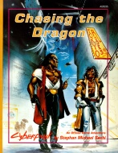

|  | Fiche technique |
| Scénario pour le jeu de rôles Cyberpunk 2020, édité par Atlas Games (1992) | |
| Langue | Anglais |
| Thème | Scénario "chasse à l'homme" se déroulant dans les zones de combat de Night City |
| Qualité du background | 3 / 5 |
| Qualité des scénarii | 2 / 5 |
| Qualité des règles | - |
| Qualité des illustrations | 2 / 5 |
| Qualité de l'écriture | 2 / 5 |
Pour ce qui est de la critique de cet ouvrage, la plupart des griefs énoncés à l'encontre de Night City Stories sont vrais là encore. La maquette et les illustrations sont vomitives, l'histoire squelettique et juste prétexte à une enquête quasi-linéaire ponctuée de combats. Pourtant j'ai une certaine tendresse pour ce scénario (peut être parce qu'il fut un de mes premiers achats), qui possède à mon avis la qualité de proposer des points de départ intéressants. Par exemple, le MJ peut décider d'étoffer le background (inexistant) de la zone de combat concernée, des gangs, des personnalités des différents PNJs, et changer quelques détails de déroulement çà et là. Au prix d'un certain effort, ce scénario peut devenir une campagne passionnante.
{kind=link}